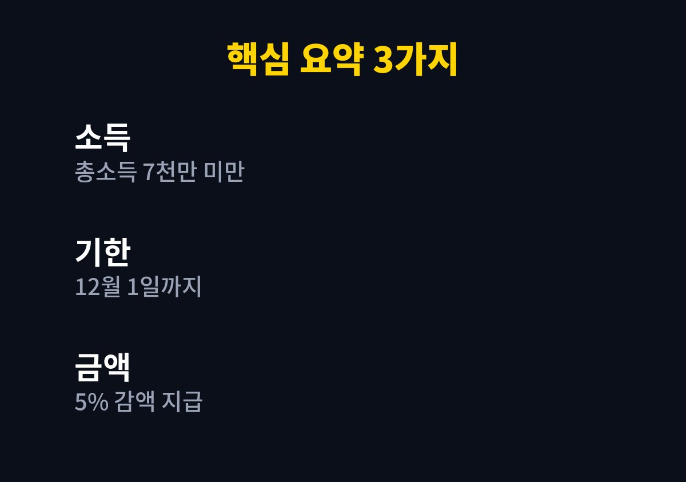

자녀장려금 신청은 부부 합산 총소득이 7천만 원 미만인 가구가 대상이며, 놓친 경우 2026년 12월 1일까지 기한 후 신청이 가능하다.
아이를 키우면서 5월 신청 시기를 지나친 가구라면 아래 순서대로 확인하면 된다.
2026년 11월 기준으로 내가 찾아보며 정리한 내용이다.
자녀장려금은 부양 자녀가 있는 저소득 가구에 국세청이 현금을 지급하는 제도다.
나도 두 아이를 키우는 입장이라 이런 제도를 뒤늦게 알게 되는 일이 흔하다는 점이 마음에 걸렸다.
그래서 신청 시기를 놓친 가구가 어떻게 해야 하는지 찾아보며 정리했다.
아이가 크면 학원비와 생활비가 함께 늘어서 이런 현금 지원 하나가 가계에 주는 무게는 작지 않다.
그런데도 신청 자체를 모르고 지나가는 경우가 있어 한 번 더 정리해 두기로 했다.
정기 신청은 5월이고, 놓친 가구는 12월 1일까지 기한 후 신청을 할 수 있다.
5월에 신청하지 못한 이유가 무엇이든 마감 전이라면 아직 길은 열려 있다.
이때는 지급액이 5% 감액된다고 안내되어 있다.
국세청이 미신청 가구 약 26만 곳에 안내문을 보낸다는 보도도 확인했다.
안내문을 받았다면 대상일 가능성이 있다는 신호이므로 그냥 넘기지 않는 편이 좋다.
보도된 안내에는 가구의 연간 총소득이 7천만 원 미만이어야 한다는 내용이 담겨 있다.
여기에 재산 기준과 부양 자녀 조건이 함께 적용되므로 소득만 보고 판단하면 안 된다.
재산 기준을 넘으면 소득이 낮아도 제외될 수 있고, 자녀 조건도 따로 충족해야 한다.
세부 수치는 해마다 조정될 수 있어 국세청 공고에서 직접 확인해야 한다.
국세청 홈택스에서 장려금 대상 여부를 조회하면 안내 대상인지 확인할 수 있다.
모바일 앱 손택스로도 같은 조회가 가능해 컴퓨터가 없어도 휴대전화로 확인할 수 있다.
조회에 필요한 본인 인증 수단은 미리 준비해 두는 것이 좋다.
이미 안내문을 받았다면 그 내용이 가장 정확한 출발점이다.
조회 결과가 애매하게 나오면 가구 구성과 소득 자료를 다시 정리해 본 뒤 공식 안내와 맞춰 보는 것이 좋다.
부부가 함께 사는 경우에는 합산 기준으로 본다는 점도 염두에 두어야 한다.
| 항목 | 내용 |
|---|---|
| 신청 기한 | 2026년 12월 1일까지 |
| 소득 기준 | 총소득 7천만 원 미만으로 안내됨 |
| 지급액 조정 | 기한 후 신청은 5% 감액 |
| 자녀별 금액 | 가구 상황에 따라 달라 공식 공고에서 확인 |

자녀 수에 따른 금액과 재산 기준은 확인하지 못해 적지 않았고, 공식 공고에서 확인해야 한다.
확인되지 않은 숫자를 그럴듯하게 채우면 읽는 분이 잘못 판단할 수 있어 비워 두었다.
실제 금액은 홈택스 조회 결과가 가장 정확하다.
1. 홈택스나 안내문으로 올해 대상 여부를 조회한다.
2. 부양 자녀의 주민등록상 관계와 가구 구성을 확인한다.
3. 소득과 재산 요건을 공식 공고의 기준과 비교한다.
4. 12월 1일 전에 홈택스나 손택스로 신청서를 제출한다.
5. 처리 결과와 지급 시기를 같은 경로에서 확인한다.
제출 전에 입력한 가구 정보가 맞는지 한 번 더 살펴보면 실수를 줄일 수 있다.
막히는 부분은 관할 세무서나 국세청 상담 창구에 문의하는 방법이 있다.
대상이 될 수 있는데도 신청하지 않으면 지급 자체가 이루어지지 않는다.
다만 대신 신청해 준다며 개인정보나 수수료를 요구하는 연락은 따르지 않는 것이 안전하다.
신청은 국세청 공식 경로에서 본인이 직접 하는 것이 원칙이다.
가족과 함께 사용하는 인증 수단이라면 신청 전에 미리 사용할 수 있는지 확인해 두는 것이 좋다.
자녀장려금 신청은 소득 기준 확인과 마감일 확인, 이 두 가지가 핵심이다.
오늘 안에 조회만 해 보아도 이번 연말에 할 일이 훨씬 또렷해진다.
아이 키우는 일만으로도 바쁜 시기이니 미루지 말고 한 번 확인해 두기를 권한다.
※ 2026년 11월 기준 공개된 정보를 정리한 글이며, 정확한 대상 요건·금액·신청 기간은 복지로·정부24·관할 주민센터의 공식 공고를 확인하시길 바란다.